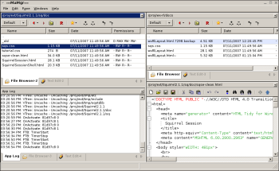

Introduction An example Building Algorithm & Misc Notes |
IntroductionWhat is wxRecursiveLayoutwxRecursiveLayout (or wxRL) is a window layout manager for wxWidgets built around a central (yes, recursive) algorithm. It divides the window into rectangular non-overlapping areas.It is based on the observation that almost all layout items (from the smallest decoration to full application windows) are rectangular and follow a few simple rules in interacting with the larger layout. It is generic enough to be used both for main frame layouts and in dialog layouts. This document is mostly related to using it for frame layouts. An example:  wxRL does not add any new geometry to the layout. The layout is based on wxSizer derived classes (with wxBoxSizer being the most common one) which basically allows to pack areas vertically or horizontally. However you can do that in many nested levels, so a lot is possible. The result is a layout that is packed, without a default 'center' or 'document' area. One can arrange such layouts, but it is not enforced. One could say of this approach that it does not use wxSizers for doing the layout, wxSizers are the layout. What does wxRecursiveLayout provide?These are the areas where wxRecursiveLayout does a lot of work to simplify for the application:
wxRlItemThe class that does most work is wxRlItem. It represents a rectangular area which is automatically positioned and resized, it can paint itself, and it can respond to mouse events. It can also contain any subset of wxWindows and wxRlItems. It can be thought of as a very lightweight window class (on its own it is not though, it needs to be 'powered' by the layout manager).From the wxWidgets perspective wxRlItem inherits from wxSizerItem. To this it adds a type field and the ability to render itself, together with a 'capability' and 'state' field. It also integrates part of the wxSizer functionality by providing access functions to children, parent, siblings and the root item. Items can also be accessed via their address in the layout. As wxSizerItem it can contain other sizers, windows and wxRlItems. wxRlItem is used directly by the application and therefore have simple functions like Insert, Detach, Replace, Destroy, Enclose to handle items. These functions do work in the background such as inserting/removing edges and creating/removing subsizers. wxRlManagerA layout is a tree of wxRlItems managed by a wxRlManager class. wxRlManager has a wxWindow instance (the managed window), where the layout is shown /rendered to. wxRlManager can manage any type of window, including frames, child windows, panels and dalogs.wxRlManager derives from wxEvtHandler. When given a window to manage, it listens to the events of the window and passes them down the hierarchy of wxRlItems. Mouse, sizing, activation and paint events are handled. wxRlManager will do the layout in the client area of the window and it will fill up the entire client area with the layout. Therefore an application usually does not paint in the client area of a managed window. Rendering and wxRlPainterThere are two different ways for a wxRlItem to render itself, both handled through:virtual void wxRlItem::Render( wxDC *dc ); virtual void wxRlPainter::Render( wxDC *dc, wxRlItem *item, const wxRect &r ); However, a derived wxRlItem can also implement its own version of wxRlItem::Render, then it will paint itself without using the active wxRlPainter. |